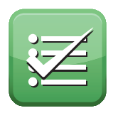

4 Projektmanagement
IPERKA Von einer vollständigen Handlung spricht man, wenn man alle sechs IPERKA Schritte ausführen konnte. Dadurch erkennt man vorhandenen Zusammenhänge und kann sich für, die am besten geeigneten Lösung entscheiden und die Arbeit auch eigenverantwortlich kontrollieren und allen falls korrigieren. IPERKA lässt sich für kleinere und auch grössere Projekte anwenden. Unten werden alle Schritte erklärt.
Beim ersten Schritt sollte man sich mit dem Ziel und Aufgang sich vertraut machen. Man muss
sich über die Lösung und die Rahmen Bedingungen sich im Klaren sein.
Wichtige Fragen:
Wichtige Fragen:
- Wie lautet die aufgebe?
- Welche Ergebnisse werden bis wann erwartet?
- Welcher Rahmenbedingung müssen eingehalten werden?
- Kann ich die Aufgabe mit bekannten Informationen und Kenntnissen lösen?
- Welche ähnlichen aufgaben wurden schon gelöst von wem und wie?
- Wie und von wem wird das Produkt oder das Ergebnis eingesetzt?
- Welcher Spielraum für verschiedenen Lösungen ist vorhanden?
- Wurden bereits Vorarbeiten geleistet?
- Wenn muss ich über den Arbeitsfortschritt und die Resultate informieren?
Man sollte im Team oder auch alleine planen wie man diese aufgebe anpackt und bearbeiten
will. Man sollt verschiedenen Lösungsvarianten sind Vorgehensweisen sich überlegen.
Wichtige Fragen:
S.M.A.R.T
SMART kann dabei helfen das Ziel konkret zu definieren.
Spezifisch:
Ziele müssen eindeutig definiert sein
Messbar
Ziele müssen messbar sein
Akzeptiert
Die Ziele müssen für die Person ansprechend sein.
Realisierbar
Das gesteckte Ziel muss möglich und realisierbar sein.
Terminiert
Das Ziel muss mit einem fixen Datum festgelegt werden können.
z.B. Bis am 23.1.19 haben wir ein Video von 30-40s produziert.
Wichtige Fragen:
- Welche Lösungsmöglichkeiten sind zu Prüfen?
- Welche teilarbeiten von welcher Dauer sind zu erledigen?
- Welche Priorität haben die Teilaufgaben?
- Wer bearbeitet welche Teilaufgaben?
- Wie sieht der Zeitplan aus?
- Welche Hilfsmittel und Geräte werden benötigt?
- Welche Qualität Anforderungen sind einzuhalten?
- Wie und durch wen wird die Qualität der Teilergebnisse und des ganzen Resultats geprüft?
S.M.A.R.T
SMART kann dabei helfen das Ziel konkret zu definieren.
Spezifisch:
Ziele müssen eindeutig definiert sein
Messbar
Ziele müssen messbar sein
Akzeptiert
Die Ziele müssen für die Person ansprechend sein.
Realisierbar
Das gesteckte Ziel muss möglich und realisierbar sein.
Terminiert
Das Ziel muss mit einem fixen Datum festgelegt werden können.
z.B. Bis am 23.1.19 haben wir ein Video von 30-40s produziert.
In diesem schritt werden alle Entscheidungen getroffen. Hier ist es wichtig das man das
Konzept mit Mood- und Storyboard fertig hat. Damit man alle Entscheidungen wie Preis oder
welche Story man Produziert bestimmen kann.
Wichtige Fragen:
Wichtige Fragen:
- Welche Lösungsvarianten steht zur Wahl?
- Wie werden die Lösungensvarianten bewertet?
- Welche Kriterien sind für den Entscheid ausschlaggebend?
- Wer ist für den Entschied zuständig?
- Wie wird der Entschied begründet?
Bei diesem Schritt, führt man die Arbeit entsprechend der Planung aus. Das Realisieren oder
Ausführen kann bei produktiven Arbeiten den zeitlichen Hauptteil einer Aufgabe umfassen
oder, zum Beispiel beim Durchführen einer Veranstaltung, nur einen kleineren Teil
beanspruchen. Man sollte die einzelnen Arbeitsschritte Dokumentieren. Wenn man Abweichungen
beim Zeitplans sieht, sollte man sie dementsprechend anpassen. Diese werden festgehalten
und begründet.
Wichtige Fragen:
Wichtige Fragen:
- Werden die geplanten Aufgaben/Aktivitäten tatsächlich umgesetzt?
- Gehen die mittarbeiten nach Plan und Absprache vor, oder gehen sie eigene Wege?
- Mus die Leistung der Mitarbeitenden erhöht werden?
- Stimmt Zeit Planung und Budget nicht dem Projektfortschritt überein?
- Braucht es zusätzliches mittel?
- Welcher Konsequenz ergeben sich aus allfälligen Abweichungen von der Planung?

Kontrollieren:
Die erledigten Aufgaben sollten, nach der Ausführung, kontrolliert werden. Man sollte
nachschauen ob das Ergebnis den Vorgaben entspricht. Wenn man mit der selbst Kontrolle
fertig ist, kann man die Arbeit durch eine andere Person kontrollieren lassen.
Wichtige Fragen:
Wichtige Fragen:
- Erweisen sich die in der Planung festgelegten Prüfkriterien als richtig und vollständig?
- Sind alle Abmachungen klar und halte sich alle daran?
- Können die Ziele und Teilziele erreicht werden?
- Erfolgt die Kontrolle auf eine andere Art der durch eine andere Person als die Ausführung?
- Werden grundlegende Mängel protokollieret sowie den Betroffenen in den Verantwortlichen weitergeleitet?
- Ist die Dokumentation aktuell, und sind allfällige Änderungen nachgetragen?
Zum Schluss wird die Arbeit reflektiert. Man geht alle Aufgaben durch und beurteilt die
einzelnen Schritte und sich selbst.
Wichtige Fragen:
- Was war gut?
- Was war nach zufriedenstellen?
- Was mache ich nächstes Mal besser?
- Welche Verbesserungen sind für künftige Aufgaben oder Projekte nötig?
- Wie wird sichergestellt, dass Verbesserungsmassnahmen viel künftigen Arbeiten beachte werden?
- Wer ist über den Abschluss des Auftrags oder des Projekts zu informieren?